Run your shop's stock, sales and dues in one app
A fast point-of-sale and inventory app for small shops in Bangladesh. It works fully in বাংলা (or English), uses your Android phone as a barcode scanner, and keeps a বাকি খাতা for every customer.
No internet needed to install or use. Your data stays on your PC.
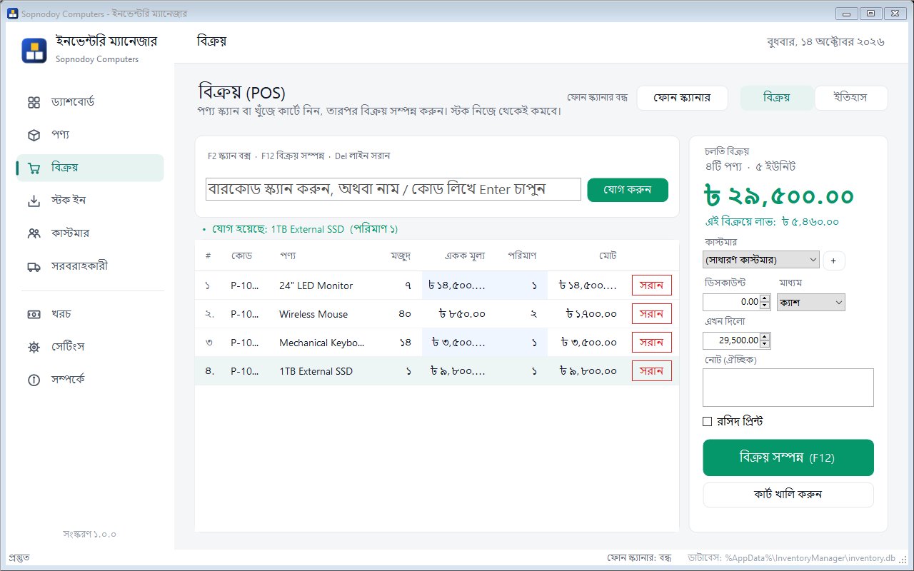
Everything a small shop needs
From the counter to the month-end report. Every screen is in Bangla with clear Bangla digits, and you can switch to English any time.
Sales (POS)
Scan or search items into a cart, see the profit before checkout, then print a receipt. Discounts, partial payment and Cash / bKash / Nagad / Card.
Stock In
Receive goods from a vendor at the purchase cost. The cost updates the product's purchase rate, so profit stays right.
Customers & dues (বাকি খাতা)
Sell on credit, take payments later, see each customer's full ledger with a running balance, and print a due slip.
Returns (ফেরত)
Take back items from any invoice. Stock goes back, profit reverses, and the refund first clears the customer's due.
Products & stock
Categories, vendors, barcodes, purchase and sale price, low-stock alerts, stock adjustment for damage or loss, CSV export.
Dashboard & reports
Sales, profit, expenses and net profit for today, yesterday, this month or any range, with charts. Print an A4 business report.
Phone as barcode scanner
Open a link on any Android phone on the same Wi-Fi and scan with its camera. No app to install. USB scanners work too.
Barcode labels
Print price and barcode labels on A4 sheets (65, 40 or 24 per page) or a 38 × 25 mm label roll.
Warranty & serials
Record each unit's serial number when you sell it, then look any serial up later to see the invoice and warranty days left.
Expenses
Rent, electricity, salaries, tea: record expenses by category and see the real net profit after them.
Restock order list
Everything at or below its reorder level, grouped by vendor with suggested quantities, ready to print and take to the market.
Google Sheet sync
A live copy of products, sales, dues and daily totals in your own Google Sheet, which you can open on any phone.
App lock (PIN)
A full-screen lock: nothing is visible until the PIN is entered. Locks on start, on request, and after 10 idle minutes.
Automatic backup
A backup every day when you close the app (30 days kept), optionally copied to a USB drive or OneDrive folder.
Keyboard shortcuts
Every common action has a key, and you can change any of them in Settings.
A look inside
Real screens from the app in Bangla mode, with sample data. Click any picture to enlarge it.
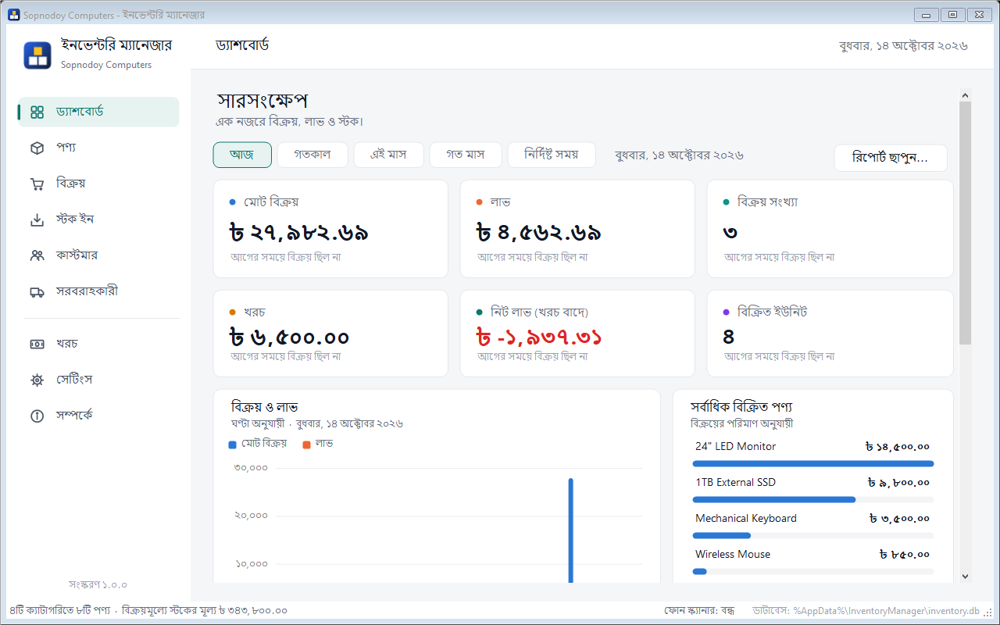
Dashboard
The whole business at a glance for any period.
- Total sales, profit, expenses and net profit, each compared with the previous period
- Sales & profit chart: hourly, daily or monthly
- Top-selling products, current stock value and items that need restocking
- Print report makes an A4 report for the chosen dates
Sales (POS)
Built for speed at the counter.
- Scan with a USB scanner or your phone, or type a name or code and press Enter
- Change quantity or price right in the cart
- Pick a customer to sell on due, give a discount, choose the payment method
- Checkout with F12 and print a receipt
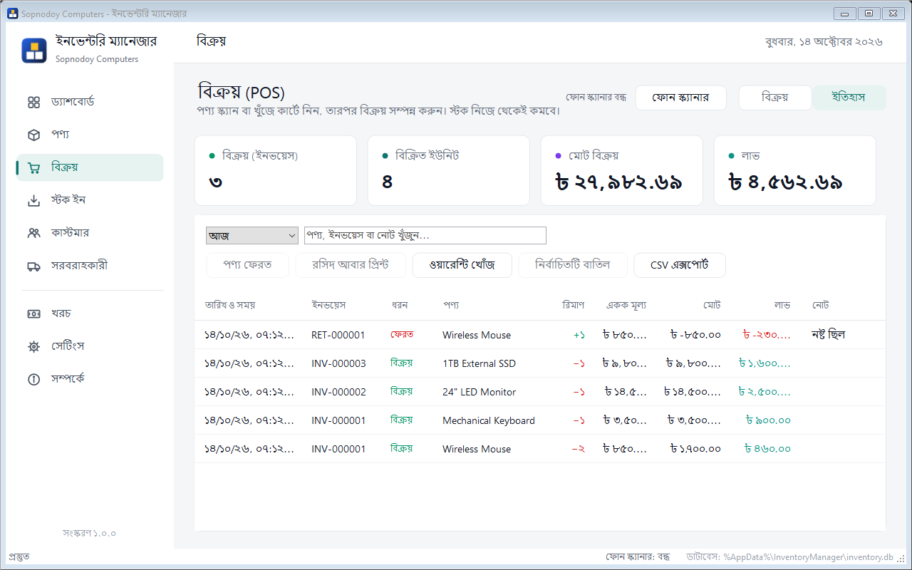
Sales history
Every invoice, return and its profit, filtered by date or searched by product, invoice or note.
- Return items from any sale
- Reprint a receipt
- Look up a serial number's warranty
- Undo a mistake, or export to CSV
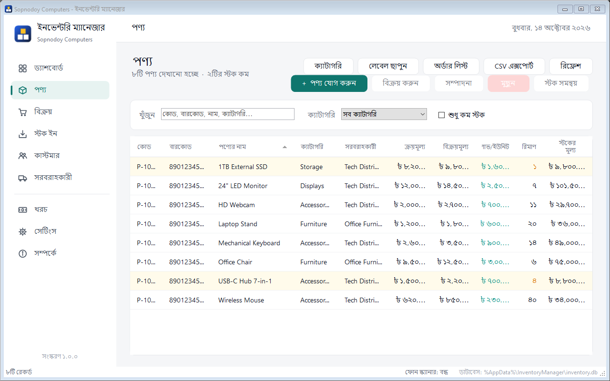
Products
Your full catalogue with live stock.
- Purchase price, sale price and profit per unit
- Low-stock items highlighted
- Adjust stock for damage, loss or counting mistakes (kept in history)
- Print labels and Order list buttons
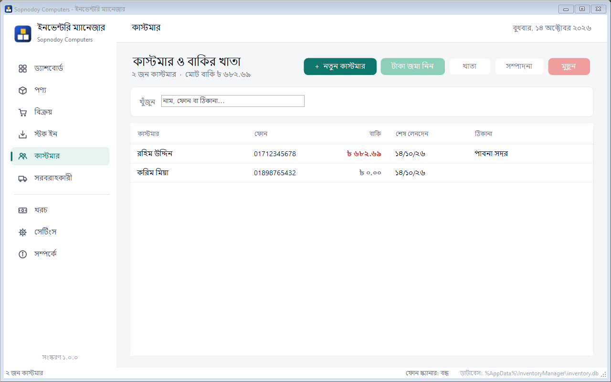
Customers & dues
A digital বাকি খাতা.
- Every customer's current due, in red when they owe
- Receive payment in cash, bKash, Nagad or card
- Ledger shows every sale, payment and return with the running balance
- Print a due slip to hand to the customer
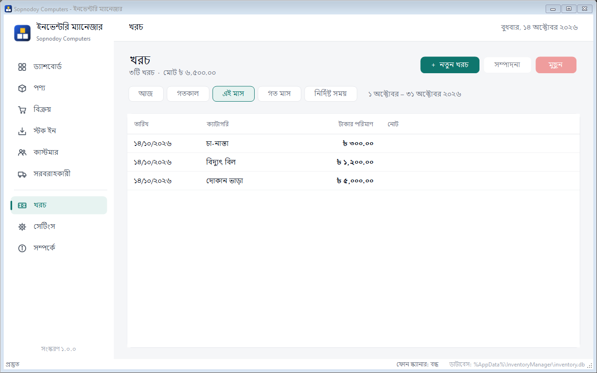
Expenses
Record what the shop spends, so the dashboard shows the true net profit.
- Date, amount, category (remembered for next time) and a note
- Filter by today, this month, last month or any range
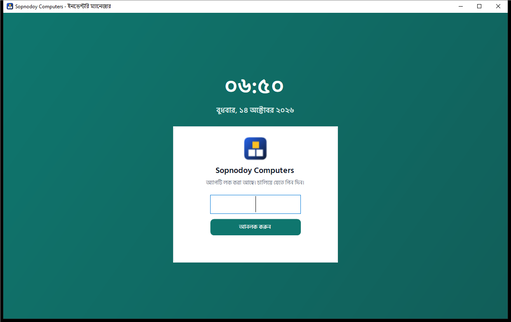
App lock
When you step away, nothing on screen can be seen or touched.
- Covers the whole window, including menus
- Locks when the app opens, with Ctrl+L, and after 10 idle minutes
- Pauses for 30 seconds after 5 wrong PINs
- Unlocking returns you to where you were
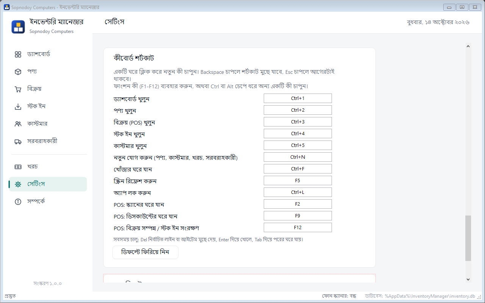
Settings
Everything in one scrolling page.
- Language (Bangla / English) and business details
- Receipt printer and paper size (58 mm, 80 mm or A4)
- Phone scanner, Google Sheet sync, backup and restore
- PIN lock and keyboard shortcuts
What it prints
Receipts on 58 / 80 mm thermal printers or A4, plus labels, reports and order lists. Every print has a preview first.
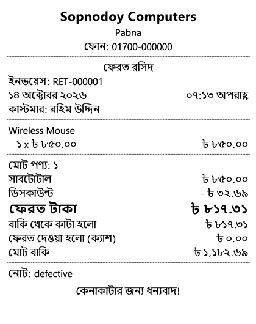
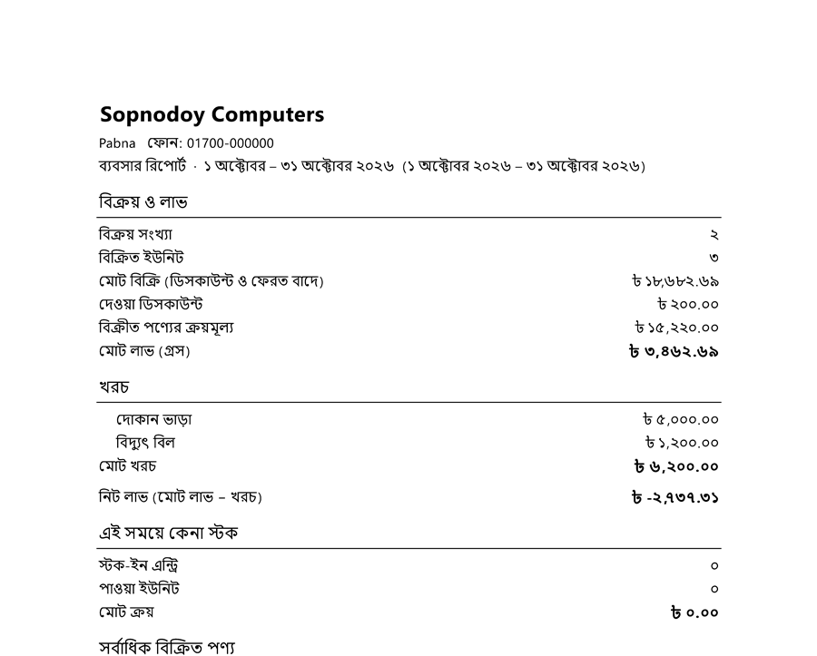
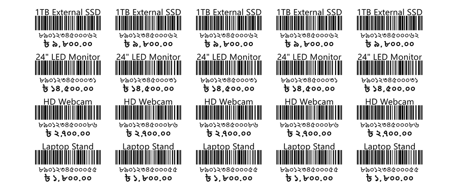
How to use it
Short step-by-step guides. Menu names are shown in English; in Bangla mode the same items appear in the same places.
1Install and first start
- Download InventoryManager-Setup.exe and run it. Click Yes when Windows asks for permission.
- On Windows 7 it first installs Microsoft .NET Framework 4.8 from inside the setup (5–10 minutes, then maybe one restart). Newer Windows skip this.
- Open Inventory Manager from the desktop shortcut.
- Go to Settings and fill in your shop name, address and phone. They appear on receipts.
- Sample products are loaded so you can try things. Remove them from Settings → Reset Data when you're ready to start for real.
Prefer no installer? On Windows 8, 10 or 11 just download InventoryManager.exe and double-click it. It's the whole app in one file.
2Add your products
- Open Products → + Add Product (or press Ctrl+N).
- Enter the name, sale price and purchase price. Scan the barcode into the Barcode box if it has one.
- Pick a category and vendor, the opening quantity, and a reorder level for low-stock alerts.
- For items with a warranty, set Warranty (months); the app will then ask for serial numbers when you sell them.
Tip: scanning a barcode the app doesn't know opens Add Product with the barcode already filled in.
3Make a sale
- Open Sales. Scan items, or type part of a name or code and press Enter. Scanning the same item again adds one more.
- Change a quantity or price by clicking it in the cart.
- Optional: choose a Customer, a Discount (F9) and the payment Method (Cash, bKash, Nagad, Card).
- If the customer pays less than the total, enter the amount in Paid now. The rest goes to their due.
- Press Checkout (F12). Stock goes down and the receipt prints if Print receipt is ticked.
4Receive stock from a vendor
- Open Stock In and choose the vendor (add vendors under Vendors).
- Scan the items that arrived. The unit cost is filled in from the purchase price; change it if the price changed.
- Press Save Stock In (F12). Stock goes up and the new cost becomes the product's purchase rate.
For broken or missing items use Products → Adjust stock instead. It asks for a reason and keeps a record.
5Use your phone as the scanner
- Connect the phone and the PC to the same Wi-Fi.
- On the PC, open Sales or Stock In and click Phone Scanner. A QR code appears.
- Scan the QR code with the phone's camera and open the link in Chrome.
- Chrome warns "Your connection is not private". This is expected, because the PC uses its own certificate. Tap Advanced → Proceed.
- Tap Start Scanning and allow the camera. Each scan lands in the PC's cart and the phone beeps.
If it won't connect: allow Inventory Manager on Private networks when Windows Firewall asks, and make sure the phone isn't on mobile data.
6Sell on due and collect payments
- In Sales, choose the customer (or click + to add one), enter what they pay now, and check out.
- Later, open Customers, select the customer and click Receive payment.
- Ledger shows every sale, payment and return with the running balance, and Print due slip prints it for the customer.
7Take back a returned item
- Open Sales → History and select a line of the original sale.
- Click Return items, set how many of each item came back, and choose how the money goes back.
- The app shows the refund. If the customer owes money, the refund reduces their due first and the rest is paid back.
8Print barcode labels
- Open Products, select a product and click Print labels.
- Type how many labels you need for each product.
- Choose the label sheet (A4 with 65, 40 or 24 labels, or a 38 × 25 mm roll), then Preview & print.
9Reports, expenses and restocking
- Record spending in Expenses. The dashboard then shows Net profit.
- On the Dashboard, choose a period and click Print report for an A4 summary.
- Products → Order list lists everything running low, grouped by vendor with suggested quantities.
10Lock the app with a PIN
- Open Settings → Security and click Set PIN (at least 4 digits, entered twice).
- Lock any time with Lock app at the bottom of the sidebar or Ctrl+L.
- The app also opens locked and locks itself after 10 minutes without use.
Don't forget the PIN. There is no reset button.
11Copy your data to Google Sheets
- Create a new Google Sheet.
- In Settings → Google Sheet sync click Copy script. In the Sheet open Extensions → Apps Script, replace everything with it, and Save.
- Give permission once: choose authorize in the function list, click Run, then Review permissions → your account → Advanced → Go to (unsafe) → Allow.
- Deploy → New deployment → Web app: Execute as Me, Who has access Anyone, then Deploy.
- Paste the Web app link (ends with
/exec) into the app and click Test connection.
12Back up and restore
- A backup is made automatically once a day when you close the app (the last 30 are kept).
- Set Settings → Backup → Daily auto-backup also copies to a USB drive or OneDrive folder for an off-PC copy.
- Back Up Now saves a copy anywhere; Restore from Backup brings one back (a safety copy is made first).
Keyboard shortcuts
These are the defaults. Change any of them in Settings → Keyboard shortcuts: click a box and press the new keys.
A shortcut has to be a function key, or use Ctrl or Alt, so it never gets in the way of typing. Always available: Del removes the selected line, Enter opens it.
| Keys | Action |
|---|---|
| Ctrl+1 … 5 | Open Dashboard, Products, Sales, Stock In, Customers |
| Ctrl+N | Add new product, customer, expense or vendor |
| Ctrl+F | Go to the search box |
| F5 | Refresh the screen |
| Ctrl+L | Lock the app |
| F2 | POS: go to the scan box |
| F9 | POS: go to the discount box |
| F12 | POS: checkout / save stock-in |
Download
Two ways to get it. Neither needs an internet connection on the shop PC.
All versions and release notes: Releases · Source code: GitHub
| Setup | Single file | |
|---|---|---|
| Windows 7 SP1 | Yes (installs .NET 4.8 itself) | Only if .NET 4.5+ is already installed |
| Windows 8, 8.1, 10, 11 | Yes | Yes |
| Shortcuts and uninstall entry | Yes | No (just copy and run) |
| Size | 119 MB | 9 MB |
Questions
Where is my data saved?
On your own PC, in %AppData%\InventoryManager\inventory.db. Nothing is sent anywhere unless you turn on Google Sheet sync. Uninstalling or updating the app keeps your data.
Windows says "Windows protected your PC"
The app isn't signed with a paid certificate, so SmartScreen may warn the first time. Click More info → Run anyway.
Do I need internet?
No. Installing and everyday use work fully offline. Internet is only used for the optional Google Sheet sync, and it catches up automatically when the connection comes back.
Which printers work?
Any printer installed in Windows: 58 mm and 80 mm thermal receipt printers, or a normal A4 printer. Choose it in Settings → Receipt and try Test print.
How do I update to a new version?
Close the app and run the new setup (or replace the single exe). Your products, sales and settings stay as they are.
Can I use it in English?
Yes. Settings → Language switches between Bangla and English; the app restarts in the new language.